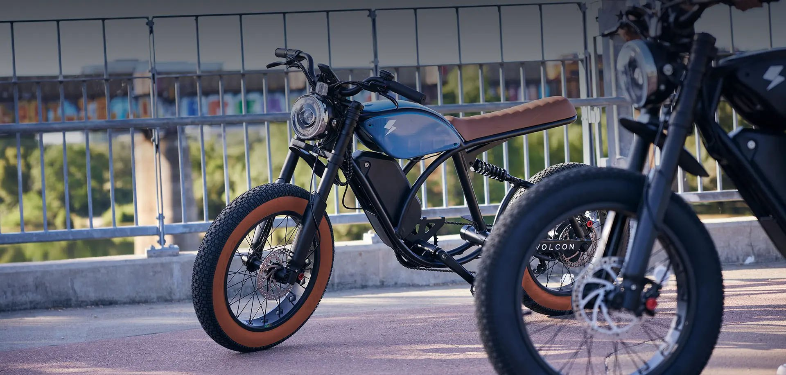

VOLCON
Development & manufacturing.
Structural Optimization & Lightweight Engineering
Using FEA analysis, PXID optimized the frame structure to improve strength while reducing material usage. This approach lowered production cost and ensured efficient mass production.

Image unavailable. Please reload this page.
Structural analysis
Review the frame geometry and load-bearing connections in the FEA visual.

Image unavailable. Please reload this page.
From geometry to a physical frame
The unpainted frame shows the joints, mounting points and overall structure.

Image unavailable. Please reload this page.
Frame fabrication
See the metalworking process behind the physical frame.
Integrated Electrical System for Stable Performance
PXID configured controller, motor and battery as a unified system. The electrical architecture achieved 99.8% production pass rate, ensuring stable performance and efficient assembly across mass production.

Image unavailable. Please reload this page.
Controller Optimization for Smooth Power Delivery
PXID configured the controller to ensure stable power output and efficient energy management. The optimized control logic improved riding smoothness and production consistency.

Image unavailable. Please reload this page.
Motor Matching for Balanced Performance
PXID selected and tuned the motor to balance torque, efficiency and durability. The motor configuration ensured reliable performance across different riding conditions.

Image unavailable. Please reload this page.
Battery Integration for Range and Safety
PXID integrated the battery system with protection and thermal management. The solution improved riding range while ensuring safety and long-term reliability.
Prototype Validation and Engineering Iteration
PXID built multiple engineering prototypes and conducted validation testing before mass production. Each prototype followed ISO-compliant assembly and 100% traceability, ensuring design consistency and manufacturing readiness.

Image unavailable. Please reload this page.
Engineering sample
Review component fit and assembly access on the physical bike.

Image unavailable. Please reload this page.
Electrical integration
Bring the electrical components and their connections together before completing the build.

Image unavailable. Please reload this page.
Assembly review
Inspect the bike and its component interfaces during prototype assembly.

Image unavailable. Please reload this page.
Frame validation
Mechanical loading equipment checks the physical frame against the design requirements.
In-House Tooling for Faster Development
PXID completed mold design and fabrication internally, reducing development lead time.100% in-house tooling enabled rapid iteration and ensured precision for critical structural components.

Image unavailable. Please reload this page.
In-house machining
A view of the workshop and its machining equipment.

Image unavailable. Please reload this page.
Tooling detail
Machined tooling and the working surfaces of the mold.

Image unavailable. Please reload this page.
CNC processing
A close view of a metal component during machining.
Precision Frame Manufacturing
Frames were manufactured using CNC machining and aluminum casting processes. PXID’s production lines ensured stable quality and supported high-volume manufacturing for global ODM clients.

Image unavailable. Please reload this page.
Frame production
Frames move through the workshop in organized batches.

Image unavailable. Please reload this page.
Machining capability
Production equipment supports the manufacture of frame components.
Image unavailable. Please reload this page.
Frame structure
An unpainted Volcon frame before the finishing stage.
Image unavailable. Please reload this page.
Fabrication detail
Review a close view of the metalworking process.
Heat Treatment and Multi-Color Coating Capability
T4/T6 heat treatment improved frame strength and durability. PXID’s automated coating line supported multiple color options and consistent surface quality for global brand customization.

Image unavailable. Please reload this page.
Treatment facilities
A wide view of the treatment equipment and workshop.

Image unavailable. Please reload this page.
Surface finish
Finished frames are arranged on a production rack.

Image unavailable. Please reload this page.
Color, material and finish
The design visual shows how the finish works with the complete bike.
Scalable Assembly Lines
PXID implemented an MES system to monitor every production step in real time. Digital workflow management improved efficiency and ensured consistent manufacturing quality.

Image unavailable. Please reload this page.
Assembly work
An operator works on a bike during the assembly process.
Image unavailable. Please reload this page.
Component installation
Check the fit of the bike and its components during assembly.
Image unavailable. Please reload this page.
Components prepared for the build
Electrical components are brought together on the workbench.
MES-Driven Production Control
PXID implemented an MES system to monitor each production stage. This digital workflow improved efficiency and ensured consistent manufacturing quality.

Image unavailable. Please reload this page.
Bikes prepared for delivery
Finished Volcon bikes are arranged in the factory.
Image unavailable. Please reload this page.
The production floor
A closer view of the assembly work behind the finished bikes.
Image unavailable. Please reload this page.
From frames to complete bikes
Batch production continues from frame preparation through assembly.
Precision Wheel Building Capability
PXID utilized advanced Dutch wheel lacing machines to ensure spoke tension consistency and wheel durability. This improved assembly accuracy and supported stable large-scale production.

Image unavailable. Please reload this page.
Wheel-building equipment
A wheel is installed in the production equipment for assembly and adjustment.
Image unavailable. Please reload this page.
Wheel and hub interface
A close view of the rear wheel, hub motor and drivetrain on the bike.
Make your next
move with PXID.
Bring your concept, target market and development brief. Let’s discuss what comes next.
Contact PXID